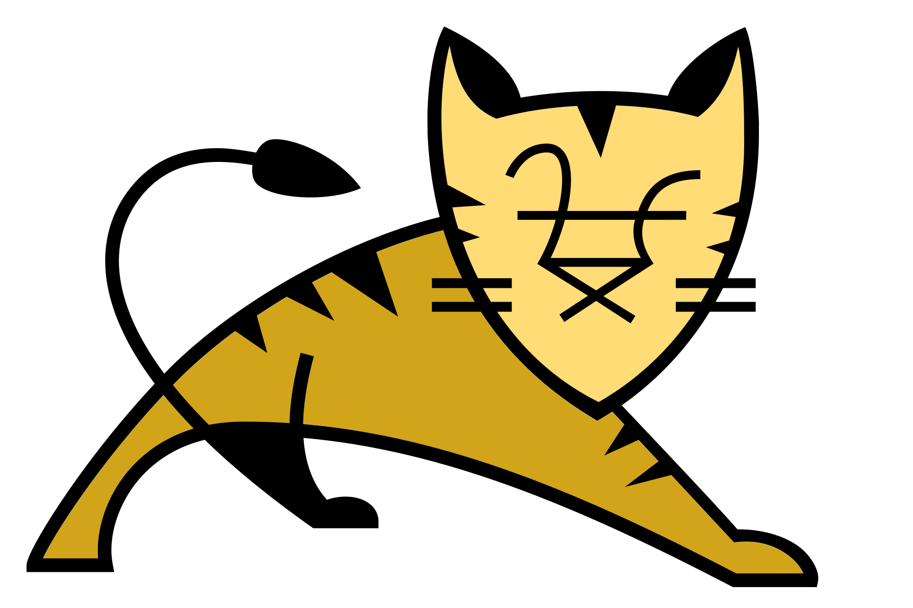

Co to jest Tomcat?

Tomcat to kontener aplikacji webowych (ang. „web container”) rozwijany w ramach projektu Apache. Jako kontener aplikacji jest serwerem, który umożliwia uruchamianie aplikacji internetowych w technologiach Java Servlets i Java Server Pages (JSP). Jest to jeden z popularniejszych kontenerów webowych. Tomcat jest wykorzystywany w takich serwerach aplikacji JEE (J2EE) jak Apache Geronimo. Jest również bardzo popularnym kontenerem dla samodzielnych aplikacji (niewymagających pełnego serwera aplikacji) pisanych w środowisku Spring Framework. Apache Tomcat początkowo rozwijany był jako część projektu Apache Jakarta. W 2005 roku projekt uzyskał status samodzielnego projektu w ramach struktury projektów Apache.